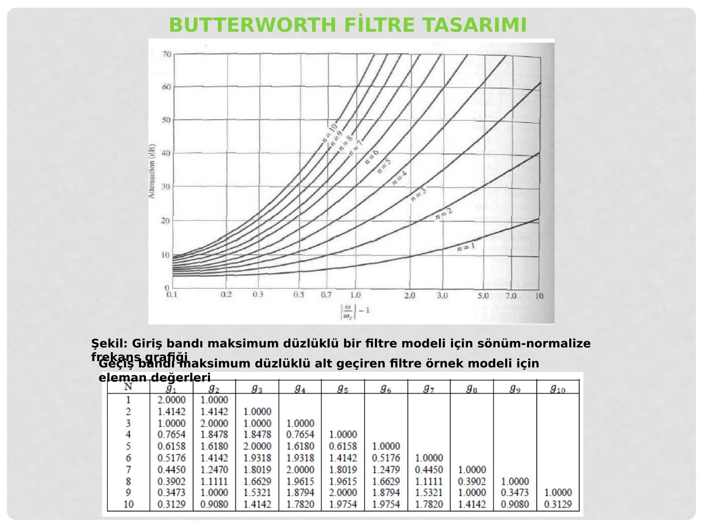

· EEM311
EEM311 Electronics II: Filter Design and Filter Types Presentation (Gizem Kahya, 2013)
EEM311 – Elektronik II · 15.05.2013 · 16.10.2026
This post presents the 28-slide "Filter Design" presentation prepared by Gizem Kahya in 2013, which was kept in the EEM 311 Electronics II folder together with the fall 2014 design assignment. The presentation comes from outside Başkent University; its bibliography cites a graduation project on "RF Filter Designs and Implementation" carried out at the İTÜ Faculty of Electrical and Electronics Engineering (Ramiz Erdem Aykaç), Mehmet Fatih Çağlar's High Frequency Engineering lecture notes, and Chris Bowick's RF Circuit Design book; most of the tables and graphs are taken from these sources. The presentation was most likely downloaded as a reference for the filter questions in the 2014 assignment. The original PowerPoint file can be downloaded at the end of the post.
This content belongs to a third-party source; it is shared for archival and nostalgic purposes with the source credited. It will be removed upon the request of the rights holder.
Filters and filter types
Filters are structures that operate at certain frequencies or block certain frequencies, with bandwidths determined by the application. They fall under four general categories:
- Low-pass filters: Pass frequencies below the cutoff frequency and attenuate higher frequencies, preventing their transmission. The frequency response of an ideal low-pass filter is rectangular. An n-element LC low-pass prototype is a ladder circuit made up of series inductors (K₁, K₃, …) and shunt capacitors (K₂, …).
- High-pass filters: Realized as a cascaded arrangement of series capacitors and shunt inductors; they pass frequencies above the cutoff frequency and attenuate those below it.
- Band-pass filters: Pass frequencies within the desired band and block the others. Bandwidth B = f_H − f_L.
- Band-stop filters: Attenuate a certain band; the shape factor is BW_c/BW = (f₄ − f₁)/(f₃ − f₂) (the ratio of the −3 dB and −50 dB bandwidths).
Note: The band-pass filter slide gives the center frequency as f₀ = (f_H − f_L)/2; this expression is half the bandwidth. The center frequency is found as the geometric mean f₀ = √(f_H·f_L) (approximately (f_H + f_L)/2 for narrow-band filters).
Filter design methods
In LC filter design, two-port circuits and especially ladder-type circuits are used. Two important kinds of ladder-type two-port circuits are the symmetric T and Π circuits. The table in the presentation compares the parameters of the two structures:
| T circuit (series Z₁/2 – shunt Z₂ – series Z₁/2) | Π circuit (shunt 2Z₂ – series Z₁ – shunt 2Z₂) | |
|---|---|---|
| ABCD | A = 1 + Z₁/2Z₂, B = Z₁ + Z₁²/4Z₂, C = 1/Z₂, D = 1 + Z₁/2Z₂ | A = 1 + Z₁/2Z₂, B = Z₁, C = 1/Z₂ + Z₁/4Z₂², D = 1 + Z₁/2Z₂ |
| Z / Y parameters | Z₁₁ = Z₂₂ = Z₂ + Z₁/2, Z₁₂ = Z₂₁ = Z₂ | Y₁₁ = Y₂₂ = 1/Z₁ + 1/2Z₂, Y₁₂ = Y₂₁ = 1/Z₁ |
| Image (characteristic) impedance | Z_iT = √(Z₁Z₂) √(1 + Z₁/4Z₂) | Z_iΠ = √(Z₁Z₂) / √(1 + Z₁/4Z₂) = Z₁Z₂/Z_iT |
| Propagation constant | e^γ = 1 + Z₁/2Z₂ + √(Z₁/Z₂ + (Z₁/2Z₂)²) | same |
Filter approximation methods
Butterworth filter
A filter with a maximally flat passband. Its attenuation is
A_dB = 10 log [1 + (W/W_c)²ⁿ]
W: the frequency at which the desired attenuation is achieved, W_c: cutoff frequency, n: order of the filter (total number of L and C elements). As the order increases, the attenuation slope becomes steeper (comparison graph for n = 2, 4, 6, 8).
Chebyshev filter
These are high-Q filters; at the cost of ripple in the passband, the transition region is steeper. Its attenuation is
A (dB) = 10 log [1 + ε² C_n²(W/W_c)], ε = √(10^(ripple(dB)/10) − 1)
C_n is the Chebyshev polynomial of order n. In the comparison of the Butterworth and 3 dB-ripple Chebyshev responses for n = 3, the Chebyshev response is seen to roll off much faster beyond the cutoff frequency.
Bessel filter
Compared with the other filters, it has greater attenuation in the passband, but it provides a smooth delay and a linear phase response.
Design stage
When determining the order of the filter, the cutoff frequency (f_c) and the attenuation required at a specified frequency are taken into account: the value |f/f_c| − 1 is calculated, and the point where it intersects the desired attenuation is found on the relevant normalized attenuation graph; the curve closest to (just above) this point gives the order of the filter. Then the normalized element values (g_k) are taken from the tables and converted to actual values.
| Filter type | Series element | Shunt element |
|---|---|---|
| Low-pass | L = g_k R / (2πf_c) | C = g_k / (2πf_c R) |
| High-pass | C = 1 / (2πf_c g_k R) | L = R / (2πf_c g_k) |
| Band-pass | C = (f_u − f_l) / (2πf_l f_u g_k R), L = g_k R / (2π(f_u − f_l)) | C = g_k / (2π(f_u − f_l) R), L = (f_u − f_l) R / (2πf_l f_u g_k) |
R: input-output resistance (Ω), g_k: coefficient from the table according to the filter to be designed, f_c: cutoff frequency, f_u: upper cutoff frequency, f_l: lower cutoff frequency.
The presentation includes normalized attenuation curves for Butterworth with n = 1…10 and a table of element values (g₁…g₁₀), as well as attenuation graphs and element tables for Chebyshev models with 0.1 dB, 0.5 dB and 3 dB ripple.

Microstrip band-pass filter with parallel-coupled lines
The final section describes a microstrip band-pass filter made up of λ/4-long parallel-coupled line pairs. The odd-mode and even-mode impedances
Z_oe = Z₀ [1 + JZ₀ + (JZ₀)²], Z_oo = Z₀ [1 − JZ₀ + (JZ₀)²], a² = Z_oe/Z_oo
and from these the line dimensions
s/d = −a² + 1 + √((a² − 1) + 1), w/d = [1 − (s/d)²] / (4√ε_r · a)
are found using these equations (w: line width, s: spacing between the line pair, d: substrate thickness, ε_r: dielectric constant). The wavelength of the wave propagating on the microstrip line is λ = c/(f√ε_eff), and the line length is l = λ/4.
Note: The presentation defines Z_oe as the "odd-mode" and Z_oo as the "even-mode" impedance; in the usual notation, e (even) denotes the even mode and o (odd) denotes the odd mode: Z_oe is the even-mode impedance and Z_oo is the odd-mode impedance.